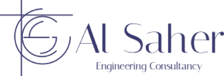

Engineeringالهندسة
Al Saher Engineering Consultancy
Mansoura, Egypt · practising since 1996المنصورة، مصر · منذ 1996
- Structural engineeringالتصميم الإنشائي
- Geotechnical & foundationsالجيوتقنية والأساسات
- Water & hydraulic engineeringالهندسة المائية والهيدروليكية
- Structural rehabilitationالترميم والتدعيم الإنشائي
- Architectural supportالدعم المعماري
- Construction support & QA/QCدعم التنفيذ ومراقبة الجودة